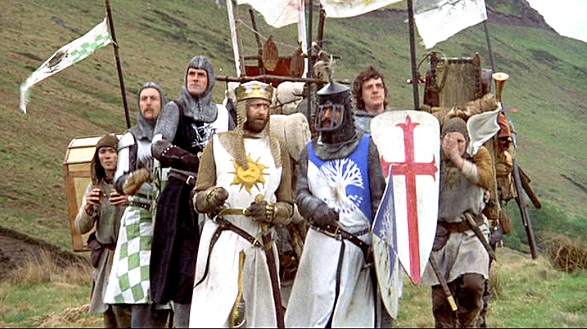

One of the most popular depictions of the myth in modern pop culture is Monty Python's Quest for the Holy Grail. Released in April 3, 1975, the Quest for the Holy Grail is widely regarded as one of the greatest comedy movies of all time.

Monty Python and the Holy Grail (1975)
References (and satire) to the Legend
Here is a footnotes version of the references regarding "Canon" Arthurian Legend:
The Black Knight was a recurring character in the myths but never fought King Arthur. He fought and was defeated by other Knights.
Sir Galahad is known as the purest of the Knights. This was taken to the extreme to in his trip to Castle Anthrax.
Lancelot rescuing a "princess" from a forced marriage could be a reference to Lancelot rescuing Queen Guinevere from an enemy king all by himself.
Tim the Enchanter is a reference to the original story's connection to Fey and fairy mythology and may be a satirical take on Merlin.